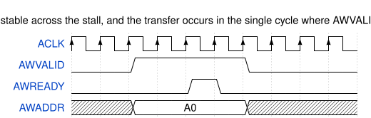
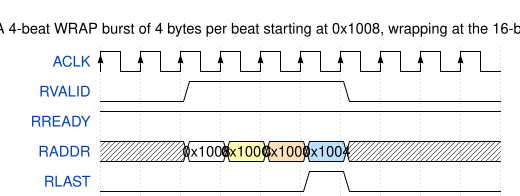
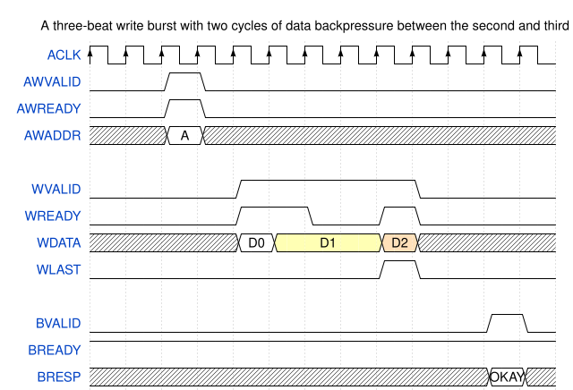
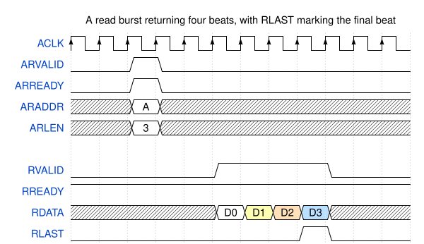
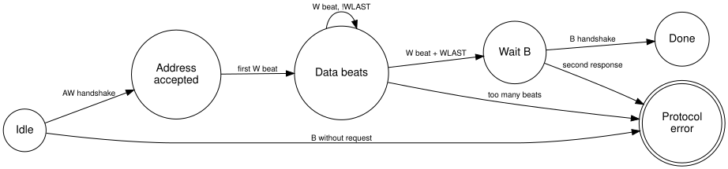

{kind=link}
Series: Intermediate SoC Design | Article 1 of 10
Introduction
This article explains how the AXI4 protocol achieves high throughput, and why that same design makes AXI4 hard to debug. It is written for engineers who already know the five channels and now have to build, integrate, or debug a real interface.
AXI is the Advanced eXtensible Interface, part of the AMBA family from ARM. AXI4 connects the high-bandwidth blocks of a system on chip: processors, direct memory access engines, graphics processors, display controllers, memory controllers, and coherent interconnects. The introductory article on interconnects described AXI as five independent channels with a valid and ready handshake. This article goes further, into bursts, transaction identifiers, ordering, backpressure, quality of service, and protocol compliance.
AXI is not a bus. It is a distributed flow-control contract between managers, interconnects, subordinates, buffers, bridges, and clock converters. Every one of those components can break the contract independently.
Note: this article uses the current AMBA terms manager and subordinate. Older documents and much existing code use master and slave for the same roles. The signal names are identical in both.
The five channels revisited
AXI4 separates read traffic and write traffic into five independent channels. Each channel carries its own handshake and makes progress on its own schedule.
{kind=link}
| Channel | Name | Direction |
|---|---|---|
AW |
Write address | Manager to subordinate |
W |
Write data | Manager to subordinate |
B |
Write response | Subordinate to manager |
AR |
Read address | Manager to subordinate |
R |
Read data | Subordinate to manager |
A transfer occurs only on a rising clock edge where VALID and READY are
both high. That single rule governs every channel.
AXI decouples the address channels from the data channels deliberately. A manager can send several write addresses before the subordinate accepts all the write data. A subordinate can delay responses while it continues to accept new addresses. This decoupling is the source of AXI throughput.
The cost of decoupling is bookkeeping. A correct design tracks every outstanding transaction, because the protocol never promises that two channels stay aligned.
The valid and ready contract
The valid and ready handshake carries two discipline rules that hand-written interfaces break more often than any other part of the protocol.
The first rule constrains the source. A source must not wait for READY
before it asserts VALID. If the source has a transfer available, it asserts
VALID immediately. A design that waits for READY first can deadlock
against a destination that waits for VALID.
The second rule constrains the payload. Once VALID is high, the payload must
stay stable until the transfer completes. The destination is free to assert
and deassert READY at any time, and that freedom is how backpressure travels
back through the system.

If the payload changes while VALID is high and READY is low, the
destination can capture corrupted information. The failure is intermittent,
because it appears only when the destination applies backpressure at the
moment the source changes its data.
Burst types and addressing
A burst moves several data beats from one address phase. AXI4 supports three
burst types, selected by the AxBURST field.
{kind=link}
| Burst | Behaviour | Typical use |
|---|---|---|
FIXED |
The address stays constant for every beat | A first in, first out data port |
INCR |
The address increments by the beat size | A normal memory copy |
WRAP |
The address increments, then wraps at an aligned boundary | A cache line refill |
Two fields encode the shape of the burst. AxLEN holds the beat count minus
one, so the transfer carries AxLEN + 1 beats. AxSIZE holds the base 2
logarithm of the beat width, so each beat carries 2^AxSIZE bytes.
Example: 4-beat INCR burst
ARADDR = 0x8000_1000
ARLEN = 3 -> 4 beats
ARSIZE = 3 -> 8 bytes per beat
ARBURST= INCR
Beat addresses:
0x8000_1000
0x8000_1008
0x8000_1010
0x8000_1018
Wrapped bursts and cache line refills
A wrapped burst keeps every beat inside one naturally aligned region. Caches use this to fetch the word the processor stalled on first, then collect the rest of the line.
The wrap boundary is the total burst size, which is the beat count multiplied by the beat width. When the address reaches that boundary, it returns to the start of the aligned region rather than crossing into the next one.

The address RADDR is shown for illustration. AXI does not carry an address
on the read data channel, because the manager already knows the address from
the read address phase.
Anatomy of a write transaction
A write completes only when all three write-side channels finish their work. The subordinate accepts the address, accepts every data beat, and returns a response.

The address phase and the data phase are independent. The manager can present write data before, during, or after the address handshake completes.
Many broken subordinates assume that AW and W arrive together. The
assumption survives a simple testbench, then fails against a real
interconnect that reorders the two channels through separate buffers.
WLAST marks the final data beat. A subordinate that counts beats without
checking WLAST cannot detect a manager that sends the wrong number.
Anatomy of a read transaction
A read uses fewer channels than a write. One address phase produces one or
more read data beats, and the final beat carries RLAST.

The read response travels in the RRESP field of each beat rather than on a
separate channel. A burst can therefore report an error on one beat and
success on another.
Transaction identifiers and ordering
Transaction identifiers let a manager keep several requests in flight at once.
The AWID and ARID fields tag requests, and the BID and RID fields tag
the matching responses.
{kind=link}
Two ordering rules follow from the identifiers:
- Transactions that share an identifier must complete in the order the manager issued them.
- Transactions with different identifiers can complete in any order, if the interconnect and the subordinate support it.
Out-of-order read completion
Manager issues:
ARID=4, address in DRAM, row miss, slow
ARID=7, address in SRAM, fast
Interconnect can return:
RID=7 first
RID=4 later
For two requests that both use ARID=4:
responses return in issue order
This rule is what lets a memory controller reorder requests around DRAM bank conflicts. DRAM is dynamic random access memory, and a row miss costs tens of nanoseconds that a reordered request can hide.
The identifier is not an address and not a priority. It is the manager's statement about which of its own requests can complete out of order. A manager that reuses one identifier for everything forbids all reordering, and loses the performance that reordering provides.
Tracking outstanding transactions
Every AXI4 component keeps state for the transactions it has started and not yet finished. The decoupled channels make this bookkeeping mandatory rather than optional.
A manager tracks its own outstanding requests. An interconnect tracks routing state so responses reach the right manager. A subordinate that accepts several requests tracks the responses it still owes.
Read outstanding table
Slot ID Source manager Target subordinate Beats left Status
---- -- -------------- ------------------ ---------- ---------
0 3 CPU0 DDR 8 waiting
1 8 DMA SRAM 1 returning
2 4 GPU DDR 16 waiting
Five questions decide whether the bookkeeping is correct:
- Depth: How many outstanding reads and writes each interface supports.
- Scope: Whether the limits apply per manager, per subordinate, or globally.
- Interleaving: Whether any component still expects write data interleaving.
- Errors: How error responses reach the originating manager, and whether the counters still balance afterwards.
- Reset: Whether a reset during an outstanding transaction leaves a counter or a route table entry stale.
The third answer is fixed by the standard, and it simplifies subordinate design. AXI3 permitted write data interleaving, so a subordinate could receive beats from two write bursts mixed together. AXI4 removed it.
Response codes
Every AXI4 transaction reports a result. The result travels in BRESP for
writes and RRESP for reads.
| Response | Meaning |
|---|---|
OKAY |
The access succeeded |
EXOKAY |
An exclusive access succeeded |
SLVERR |
The target received the request and failed it |
DECERR |
Address decode failed, usually an unmapped address |
The interconnect generates DECERR, not the target peripheral. An unmapped
address has no target peripheral to generate anything, so the decode logic
answers on its behalf.
A system that returns nothing for an unmapped address hangs instead of reporting a fault. This is one of the most common integration defects, and a single read from an unmapped address detects it.
Quality of service signalling
The AxQOS field lets a manager mark the relative urgency of a transaction.
Quality of service, abbreviated QoS, is a 4-bit value carried on both AXI4
address channels.
{kind=link}
A display controller fetching pixels for the next scanline needs low latency,
because late pixels tear the image. A background copy engine can wait. The
AxQOS field is how the manager states the difference.
The field is advisory. It changes nothing unless the interconnect or the memory controller implements an arbitration policy that reads it.
QoS-aware arbitration
High urgency: display scanout read AxQOS=0xF
Medium: CPU cache refill AxQOS=0x8
Low: background DMA copy AxQOS=0x2
Arbiter decision considers:
QoS class
starvation counter
target availability
outstanding limit
A policy where the highest value always wins starves the lower classes. Starved traffic holds buffers, full buffers apply backpressure, and backpressure can deadlock the system that the priority scheme was meant to protect. Production arbiters combine priority with an aging counter or a guaranteed bandwidth share.
Choosing between AXI4 and AXI4-Lite
AXI4-Lite is a subset of AXI4 intended for control and status registers. It removes the features that a register bank never uses.
- Every transfer is a single beat.
- The burst fields are absent.
- The transaction identifier fields are absent.
- The resulting subordinate is smaller and far quicker to verify.
Use AXI4-Lite for register banks. Use full AXI4 for high-throughput data movement. Attaching a large register block to full AXI4 gains nothing and costs verification effort, unless system integration forces the choice.
How AXI fails in practice
AXI failures usually appear as a hang rather than an error. A stalled handshake produces no exception, no trap, and no log entry.
{kind=link}
The common root causes are:
VALIDdeasserts before the destination assertsREADY- The payload changes while the transfer is stalled
WLASTis missing, early, or late- A subordinate assumes
AWandWarrive in the same cycle - An outstanding counter underflows or overflows
- A response identifier does not match any outstanding request
- An interconnect frees a route table entry before the final beat
- An unmapped access returns nothing instead of
DECERR - A clock domain bridge drops a beat under backpressure
The fastest way to diagnose any of these is to capture all five channels
around the stall. Then ask one question: which channel shows VALID high with
READY low, and which component owes the next move.
That question converts a system hang into a single accountable interface. The
component holding READY low is either waiting for something legitimate or
has lost track of its own state.
A protocol monitor for the write channel
A small monitor catches most write channel violations before they reach silicon. It watches the handshakes and flags any sequence the protocol forbids.

The three transitions into the error state cover the failures that cost the
most debug time. A response without a request means the identifier tracking is
broken somewhere upstream. Too many beats means a beat counter disagrees with
AWLEN. A second response means two components both think they own the
transaction.
Design checklist
Work through these decisions before the first line of interface code:
- Define the maximum outstanding reads and writes for every manager.
- Decide which managers use multiple transaction identifiers, and how many.
- Size every buffer for worst-case backpressure, not for average throughput.
- Add protocol assertions at every custom AXI boundary in the design.
- Map the full address space so that unmapped accesses return
DECERR. - Keep AXI4-Lite register blocks single-beat and strongly ordered.
- Capture all five channels in the waveform setup used for hang debug.
Summary
AXI4 performance comes from decoupling: independent channels, burst transfers, backpressure, transaction identifiers, and out-of-order completion. Each of those mechanisms raises throughput, and each one demands discipline in return.
That discipline covers handshake stability, outstanding transaction tracking, response ordering, and error handling. Most AXI failures are not a misunderstanding of one signal. They come from assuming that two independent channels stay aligned when the protocol explicitly permits them to drift apart.